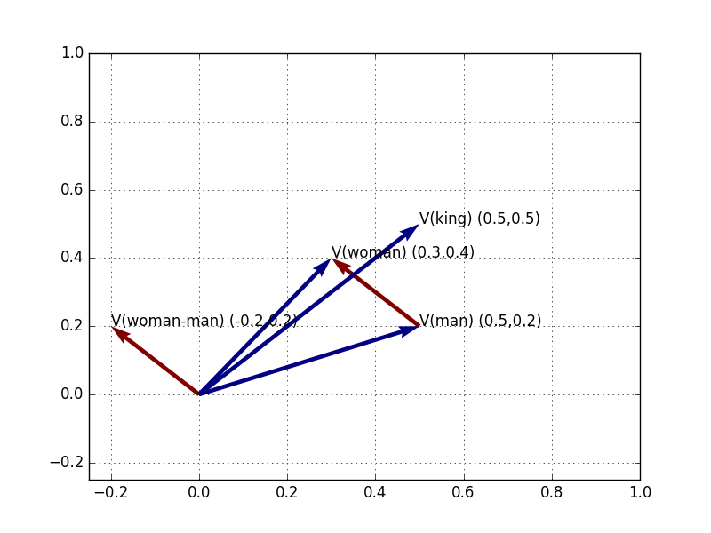
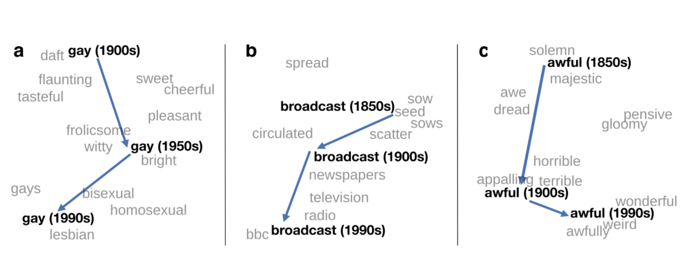
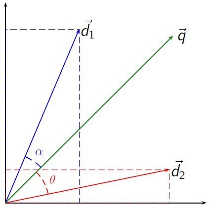
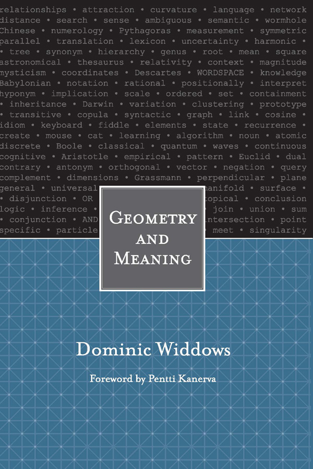

<!doctype html>
<html lang="en">
<head>
<meta charset="utf-8">
<!-- CUSTOMIZE THIS! -->
<title>La sémantique quantitative</title>
<meta name="author" content="Christof Schöch">
<!-- END -->
<meta name="description" content="Slides">
<meta name="apple-mobile-web-app-capable" content="yes">
<meta name="apple-mobile-web-app-status-bar-style" content="black-translucent">
<meta name="viewport" content="width=device-width, initial-scale=1.0, maximum-scale=1.0, user-scalable=no, minimal-ui">
<link rel="stylesheet" href="css/reveal.css">
<link rel="stylesheet" href="css/theme/simple.css" id="theme">
<!-- Code syntax highlighting -->
<link rel="stylesheet" href="lib/css/zenburn.css">
<!-- Printing and PDF exports -->
<script>
var link = document.createElement( 'link' );
link.rel = 'stylesheet';
link.type = 'text/css';
link.href = window.location.search.match( /print-pdf/gi ) ? 'css/print/pdf.css' : 'css/print/paper.css';
document.getElementsByTagName( 'head' )[0].appendChild( link );
</script>
<!--[if lt IE 9]>
<script src="lib/js/html5shiv.js"></script>
<![endif]-->
</head>

<body>
<div class="reveal">
<div class="slides">
<section data-markdown="" data-separator="^\n--\n" data-separator-vertical="^\n---\n" data-charset="utf-8" data-background-image="img/basics/uni-trier_icon.jpg" data-background-size="70px" data-background-position="top right">
<script type="text/template">

<!-- THIS IS WHERE THE CONTENT GOES! -->
<!-- Any section element inside of this container is displayed as a slide -->

## Le potentiel de la sémantique quantitative
<br/>
<hr/>
<br/>
Christof Schöch<br/>(Trier, Allemagne)
<br/>
<hr/>
<br/>Les mots du droit, atelier 3 | Oct 2021
<br/>https://christofs.github.io/wem/
<br/>
<hr/>
&nbsp;&nbsp;&nbsp;


--
# Plan
<br/>
1. [Introduction](#/2)
1. [Qu'est-ce que c'est que les 'Word Embedding Models' ?](#/3)
1. [Comment produit-on des 'Word Embedding Models' ?](#/4)
2. [Application 1 : cohérence sémantique](#/5)
3. [Application 2 : analyse de sentiment](#/6)
3. [Application 3 : identifier le discours direct](#/7)
4. [Conclusion](#/8)


--
<br/>
# Introduction

---
## Vous avec peut-être vu cela

<br/><small>
(Mikolov et al. 2013)
</small>

---
## Ou bien ceci

<br/><small>
(Mikolov et al. 2013)
</small>

---
## Ou encore cela

<br/><small>
(Hamilton, Leskovec, Jurafsky 2015)
</small>


---
## Idée fondamentale
<br/>
* Les 'Word Embedding Models', c'est cool, mais... <br/><br/> <!-- .element: class="fragment" data-fragment-index="1" -->
* Comment cela fonctionne-t-il ? <!-- .element: class="fragment" data-fragment-index="2" -->
* Est-ce vraiment utile pour les humanités numériques ? <!-- .element: class="fragment" data-fragment-index="3" -->
    * De manière intégrée à d'autres méthodes <!-- .element: class="fragment" data-fragment-index="4" -->
    * Comme méthode en tant que telle <!-- .element: class="fragment" data-fragment-index="5" -->
* Dans quelle mesure les WEM nous aident à comprendre les textes ? <!-- .element: class="fragment" data-fragment-index="6" -->


--
<br/>
# Qu'est-ce que les Word Embedding Models ?


---
## Rappel: les traits sémantiques 
<br/>


---
## Rappel : la sémantique des prototypes
<br/>


---
## La sémantique distributive : intuition
<br/>
* "Son ...... était situé au second étage du bâtiment." 
<br/><br/>
* "appartement" ! <!-- .element: class="fragment" data-fragment-index="1" -->
* "balcon" ! <!-- .element: class="fragment" data-fragment-index="2" -->
* "salon" ! <!-- .element: class="fragment" data-fragment-index="3" -->
* "chat" ? <!-- .element: class="fragment" data-fragment-index="4" -->
* "requin" ?? <!-- .element: class="fragment" data-fragment-index="5" -->
* "annotation" ??? <!-- .element: class="fragment" data-fragment-index="6" -->
* "magnifique" ???? <!-- .element: class="fragment" data-fragment-index="7" -->


---
## Qu'est que cela nous dit ? 
<br/>
* Les mots sont acceptables, plus ou moins, sémantiquement et syntaxiquement <!-- .element: class="fragment" data-fragment-index="1" -->
* Nous sommes en mesure d'estimer le degré de probabilité de chaque mot, étant donné le contexte <!-- .element: class="fragment" data-fragment-index="2" -->
* Pour cela, nous utilisons notre compétence linguistique, et notre savoir encyclopédique <!-- .element: class="fragment" data-fragment-index="3" -->
* Les ordinateurs peuvent apprendre ces probabilités à travers les corpus géants <!-- .element: class="fragment" data-fragment-index="4" -->
* La sémantique distributionnelle quantitative, c'est cela <!-- .element: class="fragment" data-fragment-index="5" -->


---
## Distributional Semantics
<br/>
>"You shall know a word by the company it keeps" (Firth)

* Les mots qui apparaîssent dans des contextes similaires ont des significations similaires <!-- .element: class="fragment" data-fragment-index="1" -->
* Les mots qui apparaîssent souvent ensemble, sont liés sémantiquement <!-- .element: class="fragment" data-fragment-index="2" -->


---
## Information Retrieval: Vector Space Model
<br/>
* Chaque document a sa place dans un espace multidimensionel <!-- .element: class="fragment" data-fragment-index="1" -->
* Cette place est déterminée par les mots-clés du document <!-- .element: class="fragment" data-fragment-index="2" -->
* Chaque mot du vocabulaire du corpus est une dimension de l'espace multidimensionel <!-- .element: class="fragment" data-fragment-index="3" -->
* Les documents qui partagent des mots-clés se retrouvent dans le même coin de l'espace <!-- .element: class="fragment" data-fragment-index="4" -->

---
## Information Retrieval: Vector Space Model

<br/>
<small>d1, d2: two documents; q = query. <br/><br/>(Originally: Gerald Salton et al. (1975). Image Credit: Riclas, Wikipedia, [Creative Commons Atttribution 3.0](https://commons.wikimedia.org/w/index.php?curid=9076846))</small>


---
## "Geometry and Meaning"
<br/>
* La sémantique des mots dans l'espace vectoriel
* Chaque mot est assigné un vector
* La proximité dénote la similarité
* Les relations sont exprimées par la directionalité
<p style="text-align:center"></p>


---
## Proximité ≈ similarité

<small>
(Donées artificels. Image: Christof Schöch, 2019, [CC BY 4.0 Int'l](https://creativecommons.org/licenses/by/4.0/))
</small>

---
## Distance ≈ dissimilarité

<small>
(Données artificiels. Image: Christof Schöch, 2019, [CC BY 4.0 Int'l](https://creativecommons.org/licenses/by/4.0/))
</small>

---
## Directionalité ≈ relations

<small>
(Données artificiels. Image: Christof Schöch, 2019, [CC BY 4.0 Int'l](https://creativecommons.org/licenses/by/4.0/))
</small>


--
<br/>
# Comment produire un modèle vectoriel de mots ?

---
## Très larges corpus textuels
<br/>
* minimum : 1000 romans (~100 millions de mots)
* petit : tout Wikipédia (~1 milliard de mots)
* Word2Vec 2013: 1.6 milliards de mots
* GPT3 2018: 500 milliards de mots (~5 millions de romans)


---
## Architecture d'entrâinement du modèle
<a href="img/cbow.png"></a>
<small>
Exemple pour "lazy panda bear"<br/>
(CBOW architecture. Image: Christof Schöch, 2019, [CC BY 4.0 Int'l](https://creativecommons.org/licenses/by/4.0/))
</small>


---
## Résultat
<br/> 
<small>

|mot|1|2|3|4|5|6|...|300|
|:--------|:-----:|:-----:|:-----:|:-----:|:-----:|:-----:|:-----:|:-----:|
|...|||||||||
|panama|0.3575|-0.2444|0.1243|-0.8276|0.8761|-0.1256||0.2398|
|panda|0.3298|0.8542|-0.2403|-0.5270|-0.5273|0.7528||0.2452|
|pantalon|-0.9563|-0.4298|0.20387|-0.8956|-0.0193|0.4289||-0.8732|
|...|||||||||
||||||||||

</small>

---
## Deux modèles
<br/>
* Wikipédia français <!-- .element: class="fragment" data-fragment-index="1" -->
    * 1.8 million articles, 750 million words
    * skip-gram model, 300 dimensions
    * tokens: "lemma_pos"<br/><br/> 
* Romans français du 20e <!-- .element: class="fragment" data-fragment-index="2" -->
    * 1200 romans, 75 million words
    * skip-gram model, 300 dimensions
    * tokens: "lemma_pos"


---
## Wikipedia Model, visualisé
<a href="img/tsne-plot_topn-nom-5800_some-labels.svg"></a>
<br/><small>(tSNE-projection to two dimensions)</small>


---
## Mots similaires
<br/>
```
Requête: ['rouge_adj', ['_adj'], 20]
------------  --------
bleu_adj      0.716535
jaune_adj     0.70717
orange_adj    0.677171
blanc_adj     0.652263
violet_adj    0.627591
rose_adj      0.587765
vert_adj      0.586344
écarlate_adj  0.581357
foncé_adj     0.570509
gris_adj      0.565617
mauve_adj     0.562542
brun_adj      0.556184
------------  --------
```
<br/>
(Modèle Wikipédia)


---
## Mots similaires
<br/>
```
Requête: ['sens_nom', ['_nom'], 20]
-----------------  --------
acception_nom      0.624668
signification_nom  0.586737
connotation_nom    0.500503
dénotation_nom     0.488691
notion_nom         0.485397
mot_nom            0.465419
expression_nom     0.464914
terme_nom          0.460238
contresens_nom     0.444292
logique_nom        0.443152
définition_nom     0.441365
étymologie_nom     0.439988
métaphore_nom      0.434653
compréhension_nom  0.434327
-----------------  --------
```
<br/>
(Modèle Wikipédia)


---
## Degré de similarité de mots
<br/>
```
Requête: ['thé_nom', 'café_nom']
Résultat: 0.6144038

Requête: ['pomme_nom', 'poire_nom']
Résultat: 0.6585389

Requête: ['pomme_nom', 'café_nom']
Résultat: 0.43146238

Requête: ['poire_nom', 'thé_nom']
Résultat: 0.40406847
```
<br/>
(Modèle Wikipédia)


---
## Degré de similarité de mots
<br/>
(Son ... était situé au second étage du bâtiment.)

```
Query: ['bâtiment_nom', 'appartement_nom']
Result: 0.4452089

Query: ['bâtiment_nom', 'balcon_nom']
Result: 0.32728785

Query: ['bâtiment_nom', 'salon_nom']
Result: 0.24037112

Query: ['bâtiment_nom', 'chat_nom']
Result: 0.08182849

Query: ['bâtiment_nom', 'requin_nom']
Result: 0.09231595

Query: ['bâtiment_nom', 'magnifique_nom']
Result: 0.079326905

```

---
## Mots projetés sur des dimensions sémantiques
<a href="img/roman20_words-2dim_nom_labels.svg"></a>

(Modèle du roman20; inspiration: Ryan Heuser, "Axes of meaning")


--
<br/>
## Domaines d'application

---
## Quelques applications en CLS
<br/>
* Histoire des idées (Ryan Heuser)  <!-- .element: class="fragment" data-fragment-index="1" -->
* Cartes conceptuels comparatives (e.g. Wikipédia vs. roman) <!-- .element: class="fragment" data-fragment-index="2" -->
* Identifiction du 'Semantic Text Reuse' <!-- .element: class="fragment" data-fragment-index="3" -->
* Correction des résultats de la ROC (remplir les mots incertains) <!-- .element: class="fragment" data-fragment-index="4" -->
* Détection de phrases similaires (Romantikerbriefe) <!-- .element: class="fragment" data-fragment-index="5" -->
* Identification du discours direct <!-- .element: class="fragment" data-fragment-index="6" -->
* Édition critique : quantifier le degré de modification sémantique d'une nouvelle version d'un texte <!-- .element: class="fragment" data-fragment-index="7" -->
* ... <!-- .element: class="fragment" data-fragment-index="8" -->


---
## Principe: ML avec WEM
* Exemple: Identification du discours direct  <!-- .element: class="fragment" data-fragment-index="1" -->
* Tâche de classification, apprentissage à travers les exemples  <!-- .element: class="fragment" data-fragment-index="2" -->
* Données  <!-- .element: class="fragment" data-fragment-index="3" -->
	* Ma femme, es-tu prête ? ; direct
	* Il disparut ; narration
* Sans WEM: annotation linguistique pour enrichir la représenation des exemples   <!-- .element: class="fragment" data-fragment-index="4" -->
* Avec WEM: vecteurs similaires permettent de mieux généraliser  <!-- .element: class="fragment" data-fragment-index="5" -->


---
## Applications dans MetaLex
<br/>
* Modèles mono-lingues : pour quantifier la différence entre plusieurs versions d'une phrase
* Modèles multi-lingues : pour l'alignement des phrases à travers les langues


--
<br/>
# Conclusion


---
## J'espère avoir 
<br/>
* donné une intuition de la manière dont les word embeddings fonctionnentSome insight or intuition into how WE work <!-- .element: class="fragment" data-fragment-index="1" -->
* donné des pistes pour une application dans MétaLex <!-- .element: class="fragment" data-fragment-index="2" -->


--
## Thank you! 
<br/>References
<small>

* Goldberg, Yoav, und Omer Levy. „word2vec Explained: deriving Mikolov et al.’s negative-sampling word-embedding method“. *arXiv.org*, 2014. http://arxiv.org/abs/1402.3722.
* Heuser, Ryan. „Word Vectors in the Eighteenth Century“. *Digital Humanities 2017: Conference Abstracts*, 256–60. Montréal: McGill University & Université de Montréal, 2017.
* Mikolov, Tomas, Kai Chen, Greg Corrado, und Jeffrey Dean. „Efficient Estimation of Word Representations in Vector Space“. *arXiv.org*, 2013. http://arxiv.org/abs/1301.3781.
* Pennington, Jeffrey, Richard Socher, und Christopher D. Manning. „Glove: Global vectors for word representation“, 2014. doi:10.1.1.671.1743.
* Schöch, Christof (im Druck). „Quantitative Semantik: Word Embedding Models für literaturwissenschaftliche Fragestellungen“, in: *Digitale Literaturwissenschaft*, ed. Fotis Jannidis.
Stuttgart: Metzler.
* Turney, Peter T., und Patrick Pantel. „From Frequency to Meaning: Vector Space Models of Semantics“. *Journal of Artificial Intelligence Research* 37 (2010): 141–88. https://arxiv.org/abs/1003.1141.
* Widdows, Dominic. *Geometry and Meaning*. Stanford CA: CSLI Publications, 2004.

<p><br/>With special thanks to gensim, pygal and reveal.js</p>


</small>

--
<br/>
<br/>
## Thank you!
<br/>
<br/>
<br/>
<br/>
<hr/>
<p>Christof Schöch, 2019</p>
<p><a href="https://christofs.github.io/">christofs.github.io</a></p>
<p><a href="https://creativecommons.org/licenses/by/4.0/">CC-BY 4.0</a><br/></p>
<hr/>
<br/>
<br/>

--
# Bonus slide

---
## Comparing models (novels vs. Wikipedia)
<a href="img/figure-6_sens17.png"></a>


</script>
</section>


<!-- DON'T TOUCH UNLESS YOU KNOW WHAT YOU'RE DOING :-) -->
</div>
<script src="lib/js/head.min.js"></script>
<script src="js/reveal.js"></script>
<script>
// Full list of configuration options available at:
// https://github.com/hakimel/reveal.js#configuration
Reveal.initialize({
    controls: true,
    progress: true,
    slideNumber: true,
    history: true,
    center: true,
    transition: 'slide', // none/fade/slide/convex/concave/zoom
    // Optional reveal.js plugins
    dependencies: [
        { src: 'lib/js/classList.js', condition: function() { return !document.body.classList; } },
        { src: 'plugin/markdown/marked.js', condition: function() { return !!document.querySelector( '[data-markdown]' ); } },
        { src: 'plugin/markdown/markdown.js', condition: function() { return !!document.querySelector( '[data-markdown]' ); } },
        { src: 'plugin/highlight/highlight.js', async: true, callback: function() { hljs.initHighlightingOnLoad(); } },
        { src: 'plugin/zoom-js/zoom.js', async: true },
        { src: 'plugin/notes/notes.js', async: true }
        ]
    });
</script>
</body>
</html>
